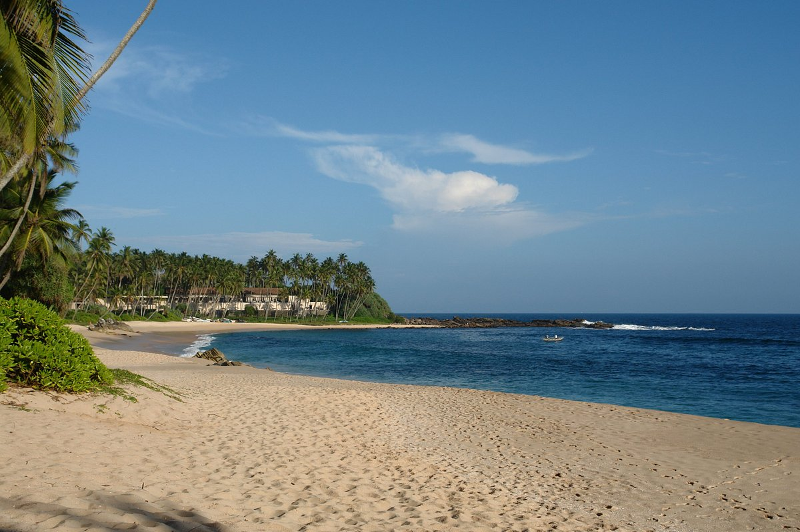

About Silent Beach

Silent Beach is a semi-private beach, located in front of the luxurious Amanwella resort
in Tangalle district of Southern Province, Sri Lanka. The name is given locally,
to this small, calm secret beach in the island country.
Silent Beach is near tangalle in Hambantota district of Sri Lanka. The beach lies at a
distance of 100 meters from the luxurious Amanwella resort. The famous and crowded
Goyombokka beach is a ten-minute walk from here.
Silent beach, as the name implies, is peaceful and undisturbed, with pristine
white sand, bright blue swivelling water, and a dense grove of palm trees under a
clear sky. It allows visitors to escape the hustle and bustle of city life.
Silent Beach lives up to its name by providing its visitors with privacy and peace.